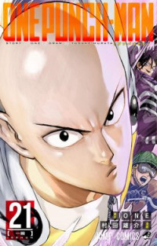
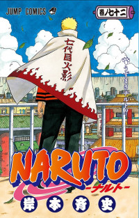

Jujutsu Kaisen
Yūji Itadori, Sendai'de sıradan bir okul hayatı yaşamakla birlikte çok büyük bir fiziksel güce sahip olan bir lise öğrencisidir. Bir gün, lanetlerce saldırıya uğrayan bir arkadaşını kurtarmak için İki Yüzlü Hayalet'in parmağını yer ve bu laneti kendi ruhuna alır.

One Punch Man
İşsiz arkadaşımız Saitama bir iş görüşmesinden dönerken yolda garip bir canavarla karşılaşır, canavar umursamaz tavırları sebebiyle Saitama dan hoşlanır ve onu öldürmemeye karar verir fakat Saitama canavarın öldürmek istediği çocuğu korumak isteyince çocukluğunda izlediği bir Anime yi hatırlar ve hobi olarak kahraman olmak istediğine karar verir. Ve sonunda herkesi ve her şeyi bir yumrukla yenecek kadar güçlü olmayı başarır.

Naruto
Naruto, bir köyde yaşayan küçük Naruro ve arkadaşlarının hikayesini konu alıyor. Ninja akademisinde eğitim gören Naruto, ailesini çok küçükken kaybetmiştir. Vahşi bir tilki şeytanın ruhunu taşıyan genç ninja Naruto Uzumaki, çevredeki insanlar tarafından da dışlanmıştır.

Solo Leveling
Dünya'da her türlü canavarla dolu bir dünyaya bağlanan bir portal ortaya çıktığı zaman bazı insanlar bir takım güçler ve canavarları avlama yeteneği kazanmışlardır: bu insanlara avcı denir. Hikâyenin kahramanı Sung Jin-woo, E seviye bir avcı ve normal bir insandan hemen hemen daha güçlüdür.
Naruto Shippuden
Naruto, bir köyde yaşayan küçük Naruro ve arkadaşlarının hikayesini konu alıyor. Ninja akademisinde eğitim gören Naruto, ailesini çok küçükken kaybetmiştir. Vahşi bir tilki şeytanın ruhunu taşıyan genç ninja Naruto Uzumaki, çevredeki insanlar tarafından da dışlanmıştır.
Boruto
Naruto, bir köyde yaşayan küçük Naruro ve arkadaşlarının hikayesini konu alıyor. Ninja akademisinde eğitim gören Naruto, ailesini çok küçükken kaybetmiştir. Vahşi bir tilki şeytanın ruhunu taşıyan genç ninja Naruto Uzumaki, çevredeki insanlar tarafından da dışlanmıştır.